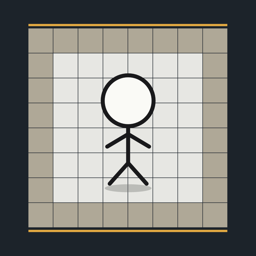

裂界：極限生還
Rift Dominion · iPhone 遊戲支援
常見問題
遊戲沒有聲音？
請在遊戲「設定」確認音訊總開關、BGM 與 SE 都已開啟，並調高 iPhone 的媒體音量。遊戲在靜音模式下也會播放聲音。
怎麼操作？
遊戲為橫向畫面，在螢幕任何位置滑動，角色就會往該方向移動一格。看到棋盤邊緣的紅色箭頭亮起，就是攻擊即將到來。
需要付費嗎？
不用。1.3.0 起所有模式與階段（經典挑戰、極限挑戰、血腥模式、血獄第二章、回聲獵場、深淵混合關）全部免費，安裝後就全部開放。沒有 App 內購買、訂閱或廣告。
我之前買過付費階段，現在怎麼辦？
更新到 1.3.0 後，所有內容都會直接開放，不需要「恢復購買」。先前的購買由 Apple 處理，若想申請退款，請到 reportaproblem.apple.com。
成績可以搬到新手機嗎？
成績只儲存在你的裝置上。請在主選單「備份／還原」匯出備份檔（可存到 iCloud 雲碟或傳到新手機），再到新手機匯入。
聯絡我們
電子郵件：ufoglove1@gmail.com
回報問題時，請附上 iPhone 型號、iOS 版本、遊戲版本，以及發生問題的模式與步驟。
Support (English)
Rift Dominion is a landscape dodging game for iPhone: swipe anywhere on the screen to move one tile and avoid the attacks warned by the red arrows on the board edge.
- No sound? Check that the master sound, BGM and SE switches in Settings are on and raise the media volume. Sound plays even in silent mode.
- Is it free? Yes. Since version 1.3.0 every mode and stage (Classic, Extreme Challenge, Bloody Mode, Blood Hell II, Echo Hunt and Abyss Mix) is free and open from the first launch. No in-app purchases, subscriptions or ads.
- Bought a stage before? After updating to 1.3.0 everything is open; there is nothing to restore.
- Move scores to a new device: export a backup from 備份／還原 on the main menu and import it on the new device.
- Refunds for earlier purchases: handled by Apple at reportaproblem.apple.com.
- Contact: ufoglove1@gmail.com